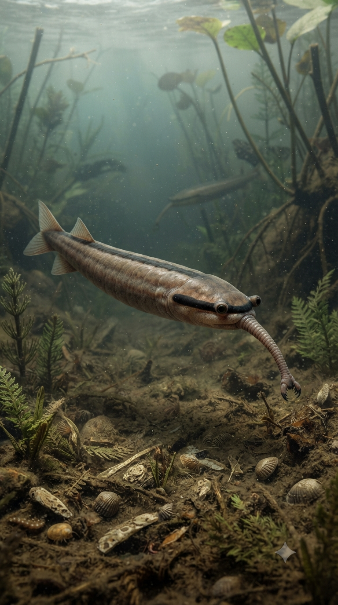
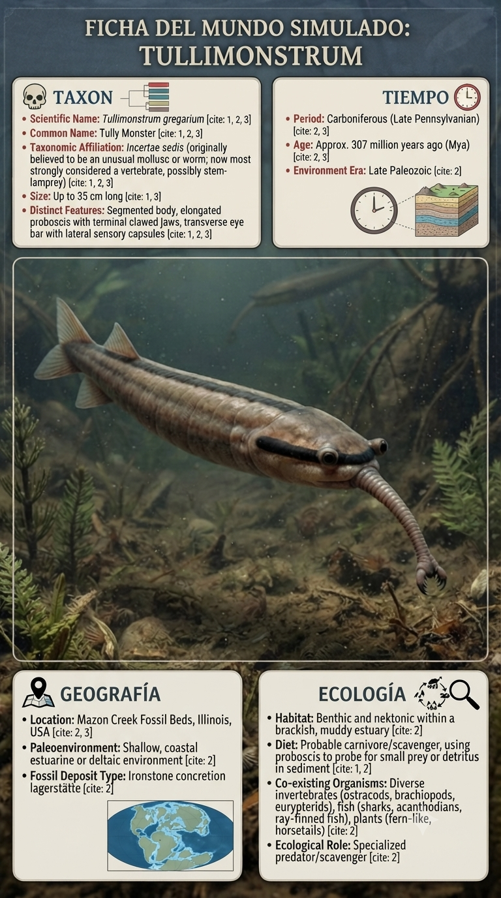
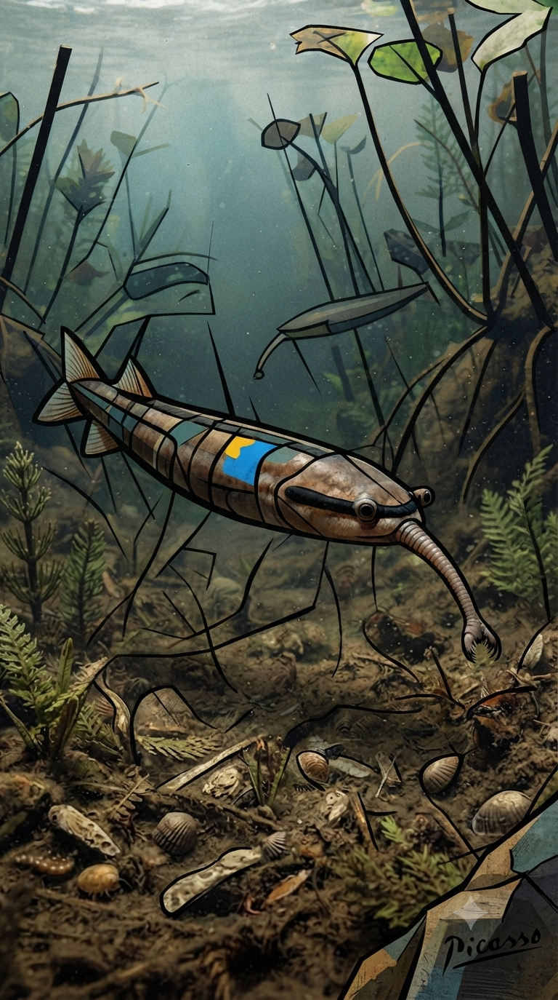

Paleoficha de PalEntropía



TAXÓN:
Tullimonstrum gregarium
CLADO:
Incertae sedis (Animalia)
DIETA:
Carnívoro / Microfágico (captura de pequeñas presas mediante una probóscide armada con dientes o espinas)
TAMAÑO:
Entre 8 y 35 cm de longitud.
LOCOMOCIÓN:
Natación mediante ondulaciones laterales del cuerpo y una aleta caudal en forma de diamante.
TIEMPO:
Carbonífero Superior (Moscoviense), aproximadamente hace 307 millones de años.
GEOGRAFÍA:
Mazon Creek, Illinois (Estados Unidos).
EQUIVALENCIA PALEOGEOGRÁFICA:
Estuarios y lagunas costeras de la cuenca de Illinois con preservación excepcional en nódulos de siderita.
AMBIENTE PALEAOECOLÓGICO:
Sistemas deltaicos tropicales ricos en materia orgánica y sometidos a sedimentación rápida.
ECOLOGÍA:
• Flora: Bosques pantanosos de licópsidas como Lepidodendron y helechos arborescentes.
• Fauna secundaria: Tiburones estuarinos, peces óseos, artrópodos marinos y el resto de la célebre comunidad fósil de Mazon Creek.
• Nichos: Organismo nectónico o bentónico que probablemente utilizaba su probóscide flexible para sondear el sedimento o capturar pequeñas presas en la columna de agua.
• Relaciones: Conocido como el "Monstruo de Tully", continúa siendo uno de los organismos fósiles más enigmáticos; su posición evolutiva sigue siendo objeto de intenso debate científico.
CLIMA:
Wm15 (Tropical húmedo). Ambiente ecuatorial cálido, con precipitaciones abundantes y temperaturas estables durante todo el año.
ESTADO ECOLÓGICO:
Estable. Tullimonstrum constituye uno de los fósiles más singulares del Carbonífero y un excelente indicador de ecosistemas deltaicos tropicales con preservación excepcional.